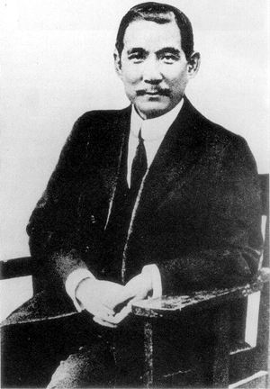
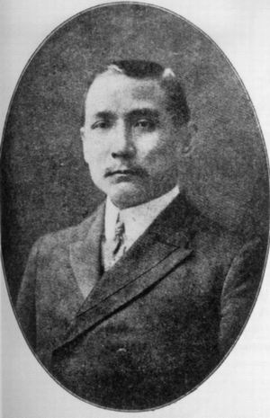
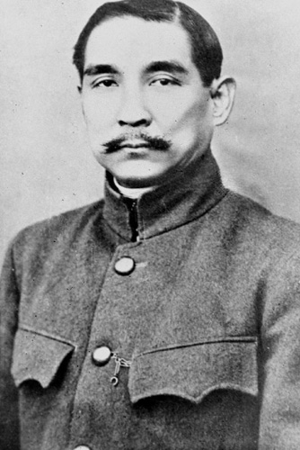
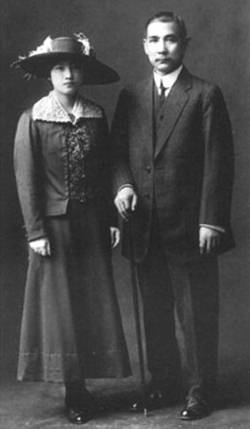

孙中山，本名孙文，谱名德明，字载之，号日新，又号逸仙，幼名帝象。中国近代民主主义革命先驱，中华民国和中国国民党创始人，三民主义的倡导者。首举彻底反封建的旗帜，“起共和而终帝制”。1905年成立中国同盟会。1911年辛亥革命后被推举为中华民国临时大总统。1929年6月1日，根据其生前遗愿，陵墓永久迁葬于南京钟山中山陵。1940年，国民政府通令全国，尊称其为“中华民国国父”。他是一位在海峡两岸都受到敬重的革命家，中华民国尊其为国父、中国国民党尊其为总理，毛泽东和中国共产党称孙中山为“中国近代民主革命的伟大先行者”。
|
|



